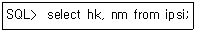
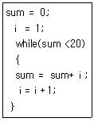
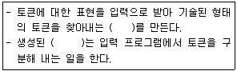
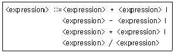
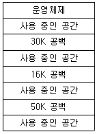
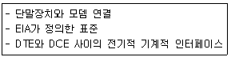

사무자동화산업기사 (2019-09-21 기출문제)
1과목: 사무자동화 시스템
1. 다음 중 전자상거래에 관한 특징이 아닌 것은?
- 생산자는 소자본 창업이 가능하다.
- 근로자는 시공간을 초월하여 업무를 수행할 수 있다.
- 소비자는 상품을 선택할 기회가 적다.
- 운송비가 절감되고 상품 조사가 용이하다.
(정답률: 93%)

2. 사무자동화(OA)의 접근방법의 유형에 속하지 않는 것은?
- 부문 전개 접근방법
- 업무별 접근방법
- 사원별 접근방법
- 계층별 접근방법
(정답률: 81%)
3. 컴퓨터의 처리속도 단위 중 피코초(ps)에 해당하는 수치를 10의 지수승 형태로 가장 올바르게 표현한 것은?
- 10-9
- 10-12
- 10-15
- 10-18
(정답률: 79%)
4. Windows 시스템상에서 일본어, 중국어 등 문자수가 많은 언어로 입력하기 위해 필요한 소프트웨어는?
- OLE
- OCX
- IME
- Active X
(정답률: 77%)
5. “의사 결정 지원을 위한 주제 지향적이고 통합적이며, 시계열적(historical)이고 비휘발적인 데이터의 집합”을 의미하는 것은?
- OLTP
- Middleware
- Data Warehouse
- Groupware
(정답률: 77%)
6. 기업의 내부, 외부의 비즈니스, 데이터를 수집ㆍ가공하고 관리자들에게 필요한 때에 요구하는 정보를 곧바로 제공할 수 있는 시스템은?
- SIS
- MIS
- POS
- DSS
(정답률: 69%)
7. 자신의 컴퓨터에 전자메일을 선택적으로 내려 받을 수 있도록 할 때 사용하는 프로토콜은?
- POP3
- FTP
- SNMP
- HTTP
(정답률: 77%)
8. 엑셀 등 스프레트시트에서 수식 자체는 변경하지 않고서 수식 안에 있는 셀에 대한 참조를 변경하려는 경우 가장 적당한 함수는?
- match 함수
- lookup 함수
- row 함수
- indirect 함수
(정답률: 66%)
9. 다음 SQL문의 의미로 가장 옳은 것은?

- 테이블 ipsi에 항목 hk, nm의 값을 삽입하라.
- 테이블 ipsi에 항목 hk, nm의 모든 값을 추출하라.
- 테이블 ipsi에 항목 hk, nm의 값을 삭제하라.
- 테이블 ipsi에 항목 hk, nm의 값으로 변경하라.
(정답률: 84%)
10. 정보 통신망 구조 중에서 중앙에 컴퓨터가 있고 그 주위에 분산된 터미널을 연결시키는 형태의 통신망 구조는?
- 성형 통신망
- 트리형 통신망
- 링형 통신망
- 버스형 통신망
(정답률: 75%)
11. 다음 중 비충격식(non-impact) 프린터가 아닌 것은?
- 잉크젯 프린터
- 레이저 프린터
- 열전사 프린터
- 도트 매트릭스 프린터
(정답률: 82%)
12. 컴퓨터시스템의 운영체제(O/S)에서 제어프로그램(Control Programs)의 주된 기능으로 가장 거리가 먼 것은?
- Job Management
- Accounting Management
- Data Management
- Resource Management
(정답률: 60%)
13. 사무자동화 시스템의 평가 방법 중 설문조사 등을 통해 간접적으로 평가하는 방법은?
- 투자효율산정법
- 정성적평가법
- 상대적평가법
- 절대적평가법
(정답률: 76%)
14. HDD와 같은 S-ATA 인터페이스를 사용하고 기계적 부품이 아닌 반도체를 기반으로 제작되어 기존하드디스크를 대체할 수 있는 저장장치는?
- Blu-ray
- SSD
- WORM
- RAM
(정답률: 87%)
15. 다음 중 데이터베이스 언어가 아닌 것은?
- 데이터 조작어(DML)
- 데이터 정의어(DDL)
- 호스트(host) 언어
- 질의어(Query Language)
(정답률: 76%)
16. 컴퓨터 시스템에서 중앙처리장치와 각각의 입ㆍ출력장치가 서로 독립적으로 작동하는 것으로 처리할 데이터를 디스크에 저장하고 이것을 다른 장치가 이용하도록 하는 것은?
- Spooling
- Multiplexer
- Buffering
- DASD
(정답률: 71%)
17. 사무자동화 추진단계의 순서로 옳은 것은?
- 분석→계획→운용
- 계획→운용→분석
- 계획→분석→운용
- 분석→운용→계획
(정답률: 71%)
18. WYSIWYG에 대한 설명으로 옳은 것은?
- 출판물의 입력과 편집ㆍ인쇄 등의 전 과정을 컴퓨터화한 전자 편집 인쇄 시스템이다.
- 디지타이즈된 사진을 자유자재로 편집할 수 있는 환경을 말한다.
- 전문지식이 없는 사람도 컴퓨터를 사용할 수 있도록 개발된 환경이다.
- 사용자가 화면으로 보는 모습 그대로 인쇄되어 나오는 편집환경이다.
(정답률: 71%)
19. 그룹웨어를 “공동으로 일을 하는 사람들 사이를 지원하거나 공유환경 인터페이스를 제공하는 컴퓨터 지원시스템”으로 정의한 사람은?
- 엘리스(Ellis)
- 존슨-렌쯔(Johnson-Lenz)
- 잉글바트(Doug Englebart)
- 콜맨(David Coleman)
(정답률: 72%)
20. 멀티미디어 압축기술에 해당하지 않는 파일 형식은?
- GIF
- PNG
- MPEG
- DXF
(정답률: 83%)
2과목: 사무경영관리 개론
21. 사무통제를 위한 관리기술 중 사무표준을 사용하여 매일 발생하는 사무를 능률적으로 처리하는 것을 목적으로 하는 관리 활동은?
- 사무품질관리
- 사무공정관리
- 사무외주관리
- 사무원가관리
(정답률: 80%)
22. 문서의 결재에 관한 설명으로 가장 옳지 않은 것은?
- 결재권자의 서명란에는 서명날짜를 함께 표시한다.
- 위임전결하는 경우에는 전결하는 사람의 서명란에 “전결” 표시를 한 후 서명하여야 한다.
- 대결하는 경우에는 대결하는 사람의 서명란에 “대결” 표시를 하고 서명하여야 한다.
- 위임전결사항을 대결하는 경우에는 전결하는 사람의 서명란에 “대결” 표시를 하고 서명 하여야 한다.
(정답률: 78%)
23. 다음 고객관계관리(CRM)의 기대효과와 가장 거리가 먼 것은?
- 고객관계강화를 통한 수익성 증대
- 목표마케팅 가능
- 고객의 수익기여도와 무관
- 휴면고객활성화
(정답률: 83%)
24. 사무량을 측정하기에 부적당한 사무는?
- 일상적으로 일정한 처리방법으로 반복되는 사무
- 상당시간 내용적으로 처리방법이 균일하여 변동이 별로 없는 사무
- 성과 또는 진행상황을 수치화하여 일정단위로 계산할 수 있는 사무
- 조사기획과 같은 비교적 판단 및 사고력이 요구되는 사무
(정답률: 77%)
25. DDC(Dewey Decimal Classification)에 의한 분류 중 연결이 틀린 것은?
- 100 : 철학
- 200 : 기술
- 300 : 사회과학
- 500 : 자연과학
(정답률: 67%)
26. 카드, 도면, 대장 등과 같이 주로 사람, 물품 또는 권리관계 등에 관한 사항의 관리나 확인 등에 수시로 사용되는 기록물은?
- 관용기록물
- 비치기록물
- 서류기록물
- 전자기록물
(정답률: 75%)
27. 경영전략에 따른 의사결정에 대한 안스프(Ansoff)의 주장과 가장 관계없는 것은?
- 의사결정에는 상품의 시장선택이 포함된다.
- 의사결정에는 경쟁상의 이점이 포함된다.
- 의사결정에는 성장 벡터가 포함된다.
- 의사결정에는 환경변화 정보가 포함된다.
(정답률: 63%)
28. EDI 네트워크 중 직접 방식 네트워크에 해당되는 것은?
- 각 거래 상대방들과의 보안관리가 힘들다.
- 흔히 VAN으로 알려져 있다.
- 가장 발전된 형태가 일 대 다중 접속방식이다.
- 송신자와 사용자 간의 통신시간대를 조정할 수 있다.
(정답률: 44%)
29. 계획화(Planning)의 내용과 거리가 먼 것은?
- 목표 또는 목적의 설정
- 자금의 조달과 원천의 결정
- 실시 가능한 대체안 중 최선안 선택
- 업무처리 결과에 대한 분석
(정답률: 74%)
30. 사무실 배치의 일반적인 목표라고 할 수 없는 것은?
- 사무작업의 흐름이 효율적으로 수행되도록 한다.
- 사무실의 경제성을 높이고 사무원가가 절감될 수 있도록 고려한다.
- 사무원의 근로 의욕을 높일 수 있는 근무환경을 만들어야 한다.
- 업무의 성격이 표현되지 않도록 한다.
(정답률: 84%)
31. EDI에 대한 설명 중 가장 옳은 것은?
- EDI는 주로 일반소비자와의 거래에 이용된다.
- 송신측에서는 문서발송 비용이 증가된다.
- EDI는 거래서식을 표준양식에 맞추어 거래하는 방식이다.
- 수신측에서는 문서 재입력 비용이 증가된다.
(정답률: 77%)
32. 문서보존의 일반 원칙과 가장 관계없는 것은?
- 보존할 문서는 가능한 한 줄인다.
- 규정에 따라 보존 문서의 정리 및 폐기를 주기적으로 수행한다.
- 문서보존규정을 제정하고 이를 준수한다.
- 훼손되어 활용이 불가능한 문서도 영구보존해야 한다.
(정답률: 86%)
33. 쾌적한 사무실 공기를 유지하기 위한 포름알데히드의 관리 기준은?
- 0.01 ppm 이하
- 0.1 ppm 이하
- 0.5 ppm 이하
- 1 ppm 이하
(정답률: 62%)
34. 힉스(Hicks)의 사무업무 내용에 의한 분류가 아닌 것은?
- 기록의 보존
- 정보의 검색과 가공
- 커뮤니케이션
- 기록과 보고서의 준비
(정답률: 45%)
35. 현대적(과학적) 사무관리의 3S에 해당하지 않는 것은?
- Standardization
- Simplification
- Simulation
- Specialization
(정답률: 77%)
36. 사무를 위한 작업의 구성요소와 가장 관계 없는 것은?
- 계산
- 분류정리
- 정보예측
- 기록 또는 면담
(정답률: 69%)
37. 다음 중 Tickler System, Come up System이 속하는 사무 관리의 관리 수단 체계는?
- 사무조직
- 사무조정
- 사무통제
- 사무계획
(정답률: 63%)
38. 정보보안의 3요소가 아닌 것은?
- 기밀성
- 무결성
- 가용성
- 책임성
(정답률: 73%)
39. 사무실을 포함한 주요 업무 시설의 물리적 보안 대책으로 가장 옳지 않은 것은?
- 출입이 인가되지 않은 외부인 등의 접근을 차단하기 위하여 센서(sensor)를 이용한 근접탐지시스템, 적외선 감시 시스템 등을 활용한다.
- 화재에 대비하기 위한 각종 화재감지기를 설치 운용한다.
- 계절 변화에 따른 온ㆍ습도 영향을 줄이기 위하여 주요 전산 시스템이 설치된 곳에 항온항습기를 설치한다.
- 불법 소프트웨어 침입을 감시하고 대처하기 위한 안티바이러스 소프트웨어를 설치한다.
(정답률: 79%)
40. 사무분류의 원칙 중 대분류에서 중분류, 중분류에서 소분류, 다시 소분류에서 세분류 등과 같이 단계를 세분화하는 방법은?
- 총합의 원칙
- 점진의 원칙
- 근접의 원칙
- 일관성의 원칙
(정답률: 80%)
3과목: 프로그래밍 일반
41. 실행 가능한 목적 파일을 통합해서 실행하기 위해 메인 메모리에 적재하는 기능을 하는 것은?
- 링커
- 로더
- 컴파일러
- 프리프로세서
(정답률: 64%)
42. 클래스 간 계층관계에 근거하고 클래스 간 속성과 연산을 공유하는 객체지향 언어의 특징은?
- 다형성
- 객체
- 추상화
- 상속성
(정답률: 55%)
43. 변수의 형이 결정되는 바인딩 시간은?
- 실행 시간
- 번역 시간
- 언어 정의 시간
- 언어 구현 시간
(정답률: 48%)
44. C 언어에서 다음과 같이 수행될 때, while문은 몇 번 수행되는가?

- 1
- 3
- 6
- 20
(정답률: 63%)
45. 컴파일러 자동화도구의 설명에서 괄호 안에 가장 적합한 내용은?

- Parser Generator
- Lexical Analyzer Generator
- Code Generator
- Code Simulator
(정답률: 57%)
46. 중위표기의 수식 “A * (B - C)"를 후위표기로 나타낸 것은?
- A B C * -
- A B C - *
- A * B C -'
- A B - C *
(정답률: 60%)
47. 주석(Comment)의 제거, 상수 정의 치환, 매크로 확장 등 컴파일러가 처리하기 전에 먼저 처리하여 확장된 원시 프로그램을 생성하는 것은?
- Preprocessor
- Linker
- Loader
- Cross compiler
(정답률: 71%)
48. 어휘 분석의 주된 역할은 원시 프로그램을 하나의 긴 스트링으로 보고 문자 단위로 스캐닝하여 문법적으로 의미 있는 일련의 문자들로 분할해 내는 것이다. 이 때 분할된 문법적인 단위를 무엇이라고 하는가?
- Token
- Parser
- BNF
- Pattern
(정답률: 81%)
49. 다음 수식(expression)을 EBNF로 맞게 표현한 것은?

- ＜expression＞ : : =＜expression＞(+￨-￨*￨/)＜expression＞
- ＜expression＞=＜expression＞[+￨-￨*￨/]＜expression＞
- ＜expression＞ : : ＜expression＞{+￨-￨*￨/}＜expression＞
- ＜expression＞ : : = expression [+￨-￨*￨/]＜expression＞
(정답률: 58%)
50. C 언어 함수 중 한 문자를 입력받을 때 사용하는 함수로 가장 적절한 것은?
- getchar( )
- inputs()
- puts( )
- putchar()
(정답률: 65%)
51. C 언어에서 문자형 자료 선언 시 사용하는 것은?
- char
- int
- float
- double
(정답률: 73%)
52. 교착상태의 필요조건에 해당하지 않는 것은?
- Mutual exclusion
- Hold and wait
- Circular wait
- Preemption
(정답률: 61%)
53. C 언어에서 사용하는 이스케이프 시퀀스에 대한 의미가 옳지 않은 것은?
- ＼r : carriage return
- ＼t : tab
- ＼n : new title
- ＼b : backspace
(정답률: 77%)
54. C 언어에서 배열(Array)에 관한 설명으로 틀린 것은?
- 배열의 각 요소를 변수처럼 사용한다.
- 배열의 첨자(index)는 1부터 시작한다.
- 배열 요소는 배열명에 첨자를 붙여 표현한다.
- 배열은 일차원뿐만 아니라 다차원 배열도 만들 수 있다.
(정답률: 68%)
55. 운영체제의 목적으로 옳지 않은 것은?
- 처리 능력 향상
- 신뢰도 향상
- 응답 시간 증가
- 사용 가능도 향상
(정답률: 83%)
56. 객체지향 기법에서 객체가 메시지를 받아 실행해야 할 구체적인 연산을 정의한 것은?
- 메소드
- 클래스
- 속성
- 인스턴스
(정답률: 67%)
57. 프로시저들 사이에 어떤 정보를 교환하고, 이들 간의 특별한 제어를 허용할 수 있는 현상은?
- Reference
- Exception
- Monitor
- Side Effect
(정답률: 51%)
58. 다음 그림과 같은 기억장소에서 15K를 요구하는 프로그램이 50K 공백의 작업 공간에 배치될 경우, 사용된 기억장치 배치 전략은?

- First Fit Strategy
- Worst Fit Strategy
- Best Fit Strategy
- BIg Fit Strategy
(정답률: 83%)
59. 파스트리에서 불필요한 자료를 제거하고 코드 생성 단계에서 필요한 정보만을 갖도록 표현한 트리는?
- 구문트리
- 구조트리
- 루트트리
- 분석트리
(정답률: 65%)
60. 형식 문법에서 type 1 문법을 인식하는데 사용되는 인식기는?
- Finite Automata
- Push Down Automata
- Linear Bounded Automata
- Turing Machine
(정답률: 56%)
4과목: 정보통신 개론
61. Start-stop 전송방식이라고 하며 데이터 전송 시 한 번에 한 캐릭터씩 전송하는 방식은?
- 동기식 전송방식
- 비동기식 전송방식
- 혼합형 전송방식
- 비혼합형 전송방식
(정답률: 66%)
62. 프로토콜(Protocol)에 대한 설명으로 옳은 것은?
- 시스템 간 정확하고 효율적인 정보전송을 위한 일련의 절차나 규범의 집합이다.
- 아날로그 신호를 디지털 신호로 변환하는 방법이다.
- 자체적으로 오류를 정정하는 오류제어 방식이다.
- 통신회선 및 채널 등의 정보를 운반하는 매체를 모델화한 것이다.
(정답률: 68%)
63. 데이터 전송 시 에러 검출용으로 사용되는 것은?
- 플래그(Flag) 비트
- 패리티 체크(Parity Check) 비트
- 시프트(Shift) 비트
- 시작 및 정지 비트
(정답률: 77%)
64. IEEE802.6으로 공표된 분산형 예약방식의 프로토콜은?
- SCCM
- DQDB
- QAM
- LAN
(정답률: 52%)
65. 변조속도가 1600(baud)이고, 쿼드비트를 사용하여 전송할 경우 전송속도(bps)는?
- 2400
- 3200
- 4800
- 6400
(정답률: 65%)
66. TCP는 OSI 7계층 중 어느 계층에 해당하는가?
- 응용 계층
- 전송 계층
- 세션 계층
- 물리 계층
(정답률: 63%)
67. 기간통신사업자의 회선을 임차하여 부가가치를 부여한 음성이나 데이터정보를 제공하여 주는 서비스망은?
- LAN
- VAN
- ISDN
- PSDN
(정답률: 64%)
68. 패킷교환방식에 관한 설명으로 적합하지 않은 것은?
- 가상회선 방식과 데이터그램 방식이 있다.
- 아날로그 데이터 전송에 최적화되어 있다.
- 패킷에 대한 우선순위를 부여할 수 있다.
- 장애발생 시 대체경로 선택이 가능하다.
(정답률: 66%)
69. 여러 개의 터미널 신호를 하나의 통신회선을 통해 전송할 수 있도록 하는 장치는?
- 변복조장치
- 멀티플렉서
- 전자교환기
- 디멀티플렉서
(정답률: 74%)
70. 다음 중 한 번에 2개의 비트를 전송할 수 있는 신호레벨을 가지고 있을 때 채널용량은 얼마인가? (단, 대역폭은 3100Hz이고, 채널 상에 잡음은 없는 것으로 가정한다.)
- 3100bps
- 6200bps
- 9300bps
- 12400bps
(정답률: 49%)
71. 전송시간을 일정한 간격의 시간 슬롯(time slot)으로 나누고, 이를 주기적으로 각 채널에 할당하는 다중화 방식은?
- 주파수 분할 다중화
- 파장 분할 다중화
- 동기식 시분할 다중화
- 회전 분할 다중화
(정답률: 69%)
72. TCP/IP Protocol에서 IP Layer에 해당하는 것은?
- HTTP
- ICMP
- SMTP
- UDP
(정답률: 52%)
73. 물리주소를 이용하여 논리주소로 변환시켜 주는 프로토콜은?
- RARP
- HTTP
- UTP
- RTPL
(정답률: 62%)
74. 디지털 변조에서 디지털 데이터를 아날로그 신호로 변환시키는 키잉(keying)방식에 해당하지 않는 것은?
- 스펙트럼 편이 키잉
- 진폭 편이 키잉
- 주파수 편이 키잉
- 위상 편이 키잉
(정답률: 69%)
75. 전송하려는 부호어들의 최소 해밍거리가 6일 때 수신 시 정정할 수 있는 최대 오류의 수는?
- 1
- 2
- 3
- 6
(정답률: 51%)
76. LAN의 네트워크 형태(topology)에 따른 분류가 아닌 것은?
- BUS형
- STAR형
- PACKET형
- RING형
(정답률: 80%)
77. ITU-T 권고안의 X 시리즈에서 패킷형 DTE와 DCE간의 인터페이스는?
- K.21
- X.22
- X.24
- X.25
(정답률: 74%)
78. 다음 설명에 해당하는 것은?

- IEEE 802
- RS-232C
- U.25
- V.24
(정답률: 59%)
79. 16진 QAM 변조기에서 레벨변환기에 2개의 입력신호가 들어가면 레벨변환기 출력에는 몇 개의 신호가 나오는가?
- 2개
- 4개
- 8개
- 16개
(정답률: 50%)
80. HDLC에 대한 설명으로 틀린 것은?
- 문자방식의 프로토콜이다.
- 오류제어를 위해 Go-back-ARQ 방식을 사용할 수 있다.
- 사용하는 문자코드와 상관이 없으며 비트삽입에 의해 투명한 데이터의 전송을 보장한다.
- 반이중 및 전이중 통신을 지원한다.
(정답률: 38%)
이유: 전자상거래는 온라인 상에서 이루어지기 때문에 오프라인 상점과 달리 상품을 직접 보고 만져보는 것이 불가능하며, 다양한 상품 중 선택할 때 시간과 노력이 필요하다. 또한, 인터넷에는 수많은 판매자와 상품이 존재하기 때문에 소비자는 상품을 찾는 데에도 많은 시간과 노력이 필요하다.